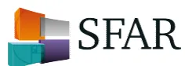
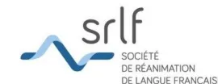

graph TD
Start["Hb < 13 g/dl Homme
Hb < 12 g/dl Femme"]
Start --> Retic1["Réticulocytes < 100 G/l
non-régénératives"]
Start --> Retic2["Réticulocytes > 100 G/l
régénératives"]
Retic1 --> VGM1["VGM < 80 fl
microcytaires"]
Retic1 --> VGM2["VGM 80-100
normocytaire"]
Retic1 --> VGM3["VGM > 100
macrocytaire"]
VGM1 --> BilanM["Bilan martial:
- Ferritine < 100, TSAT < 20%
- RetHe < 29 pg, % Hypo > 10%
- Hepcidine* ↓"]
BilanM -- oui --> CM["Carence Martiale"]
BilanM -- non --> CM2["Anémie Inflammatoire
Infection (parvovirus B19...)
• Hémoglobinopathies,
• saturnisme,
• déficit B6..."]
VGM2 --> Bilan2["Bilan :
- Créatinine
- CRP
- Folate-B12#..."]
Bilan2 --> CM2
VGM3 --> Bilan3["Bilan :
- TSH (±T4)
- Folate – B12#"]
Bilan3 --> CM3["Carence mixtes,
• Insuffisance
Rénale,
• Endocrinopathies,
• Myélodysplasies..."]
Bilan3 --> CM4["Hypothyroïdie,
Insuffisance rénale,
Myélodysplasies,
Médicaments..."]
Retic2 --> BilanH["Bilan hémolyse
- Schizocytes
- Haptoglobine
- LDH"]
BilanH --> H["Hémolyse"]
BilanH --> APH["Anémie post
hémorragique..."]
CM2 --> BC["Bilan complémentaire: myélogramme..."]
CM3 --> BC
CM4 --> BC
The flowchart starts with hemoglobin levels: Hb < 13 g/dl for men and Hb < 12 g/dl for women. It branches into two main categories based on reticulocyte count: non-regenerative (Reticulocytes < 100 G/l) and regenerative (Reticulocytes > 100 G/l). The non-regenerative branch further divides into microcytic (VGM < 80 fl), normocytic (VGM 80-100), and macrocytic (VGM > 100). Microcytic anemia leads to a martial blood test (ferritin, TSAT, RetHe, Hepcidine). If positive, it's iron deficiency; if negative, it leads to inflammatory anemia/infection (parvovirus B19) or other causes like hemoglobinopathies, saturnism, or B6 deficiency. Normocytic and macrocytic anemias lead to specific blood tests (creatinine, CRP, Folate-B12, TSH, Folate-B12) and lead to mixed deficiencies, renal insufficiency, endocrinopathies, myelodysplasias, hypothyroidism, renal insufficiency, myelodysplasias, or medications. The regenerative branch leads to a hemolysis blood test (schizocytes, haptoglobin, LDH), leading to hemolysis or post-hemorrhagic anemia. All specific diagnostic paths lead to a complementary blood test: myelogramme.
L'arbre diagnostique de l'anémie est donné ici à titre indicatif.
* l'hepcidine n'est pas encore disponible en pratique courante.
# l'OMS définit la carence en folate comme un taux de folates sérique < 10 nmol/L (4.4 µg/L) ou un taux de folates érythrocytaires, qui reflète le statut à long terme et les réserves tissulaires, < 305 nmol/L (< 140 µg/L). Pour la carence en vitamine B12, un taux sérique < 150 pmol/L (< 203 ng/L) indique une carence, un taux supérieur ne l'élimine pas et il faut alors faire un dosage sanguin d'acide méthylmalonique (un taux > 271 nmol/L est en faveur de carence en vitamine B12).